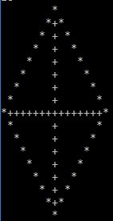
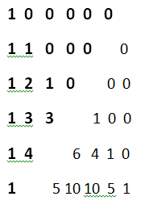

Problem 1: Rectangle. Will you Convert?
Problem Statement
Given a Rectangle of length, L, and breadth, B. The length and breadth of the rectangle are increasing at the rates Rl and Rb respectively. Both L and B are in meters and Rl and Rb are in meter per second. Find the time t in seconds at which the rectangle will convert into a square.Note: The conversion is not possible at all situations. If so print '-1'
Input Format
* The first contains a single integer 'T' that represents the number of test cases* The first line of each test case contains two space seperated integers that represent the length and breadth of the rectangle respectively
* The second line of each test case contains two space seperated integers that represent the rate of increase in length and breadth of the rectangle respectively
Constraints
* 1 <= T <= 100* 1 <= L,B <= 10^8
* 1 <= Rl,Rb <= 10^8
Sample Input 0
32 1
1 2
5 3
8 4
10 10
1 2
Sample Output 0
1.000000-1
0.000000
Explanation 0
* Case 1: Initially at t=0 L=2 and B=1. Therefore at t=1, L=2+1=3 and B=1+2=3.Thus at t=1, L=B ,so the rectangle becomes a square.* Case 2: Initially length is greater than breadth. Also the rate of increase in length is greater than that of breadth. Therefore the rectangle never becomes a square. Thus, output=-1
* Case 3: The measurements given represent a square at t=0. Thus output = 0.000000
Approach
1. Basic Prerequisites:
- For a rectangle to be a square length must be equal to breadth2. Complete Approach:
- For possible cases- new length(nl)= old length(L) + (t)time x rate_increase_in_length(Rl)
- new breadth(nb)= old breadth(B) + (t)time x rate_increase_in_breadth(Rb)
- When new length = new breadth, L+t(Rl)=B+t(Rb)
- Therefore t=(L-B)/(Rb-Rl)
- Impossible cases are:
- When, L>B and Rl>=Rb and vice-versa
Code in C++
#include <iostream> #include <iomanip> using namespace std; int main() { int t; cin >> t; while(t--) { int l , b , rb , rl; cin >> l >> b >> rl >> rb; //The given dimensions are already of a square. if(l==b) cout<<"0.000000\n"; //For the given dimensions the rectangle never forms a square. else if((l > b && rl > rb) || (l < b && rl < rb) || (rl == rb)) cout << "-1" << endl; //Use the formula to find the time based on given dimensions. else { double time; time = double(l - b) / (rb - rl); cout << fixed << setprecision(6) << time << endl; } } return 0; }
Code in Python
test=int(input()) for case in range(test): l,b=list(map(float,input().split())) rl,rb=list(map(float,input().split())) #The given dimensions are already of a square. if l==b: print("0.000000") #For the given dimensions the rectangle never forms a square. elif l>b and rl>rb: print(-1) elif b>l and rb>rl: print(-1) elif rl==rb: print(-1) #Use the formula to find the time based on given dimensions else: print("%.6f"%(abs((l-b)/(rb-rl))))
Problem 2: Try to print me!
Problem Statement
Given the no. of rows, print the required pattern which is given below.No. of rows , n = 11

No. of rows , n = 16

Input Format
* The first and only line of the input consists of a integer representing the no. of rowsConstraints
* 1 <= n <= 100Output Format
* Print the required pattern.* If the no. of rows is even, print (n + 1) rows.
* If the no. of rows is odd, print (n) rows.
Sample Input 0
16Sample Output 0
Approach
1. Basic Prerequisites:
- Nested for loops and brute force. <2. Complete Approach:
- The problem can we divided into two halves. One is increasing half and the other is decreasing half.- Increasing half has (floor(n / 2) + 1) rows.
- Decreasing half has floor(n / 2) rows.
- Each row should be printed with variable no. of symbols.
- So, for each row, we can nest a for loop to print the required no. of symbols.
Code in C++
#include <iostream> using namespace std; int main() { int n; cin >> n; //To iterate loop for (n + 1) / 2 rows. for(int i = 1; i <= (n / 2 + 1); i++) { //To print required spaces before the first star appears. for(int j = n / 2; j >= i; j--) { cout << " "; } //To print first star for every row. cout << "*"; //To print required spaces before the second star appears. for(int j = 1; j < 2 * i - 2; j++) { //To print a plus at the centre of both the stars. if(j == (2 * i - 3) / 2 + 1) { cout << "+"; } else { //To print pluses instead of space between first and second star for the middle (i.e.(n + 1) / 2) row. if(i == n / 2 + 1) { cout << "+"; } //To print spaces instead of plus between first and second star for other rows that is not the middle one. else { cout << " "; } } } //To print the second star for every row except the first row. if(i != 1) { cout << "*"; } cout << endl; } //To iterate loop for (n) / 2 rows. for(int i = 1 , m = n / 2 - 1; i <= n / 2; m-- , i++) { //To print required spaces before the first star appears. for(int j = 1; j <= i; j++) { cout << " "; } //To print first star for every row. cout << "*"; //To print required spaces before the second star appears. for(int j = 1; j <= 2 * m - 1; j++) { //To print a plus at the centre of both the stars. if(j == (2 * m - 1) / 2 + 1) { cout << "+"; } //To print spaces between the first and second star. else { cout << " "; } } //To print the second star for every row except the last row. if(i != n / 2) { cout << "*"; } cout << endl; } return 0; }
Code in Python
n=int(input()) #To print (n + 1) rows if n is even. if n%2==0: n+=1 #To iterate the loop for n rows. for i in range(n): #To print the required spaces before the first star appears. for s in range(abs(i-n//2)): print("",end=" ") #To print the first star. print("*",end="") if i!=0 and i!=n-1: #To print plus at the centre of the first and second star. if i==n//2: for j in range(n-2): print("+",end="") else: m=min(i,n-i-1) for j in range(2*m-1): #To print the pluses instead of spaces when it is the middle row. if j==m-1: print("+",end="") #To print the spaces between the first and second star. else: print("",end=" ") #To print the second star when it is not first and last row. print("*",end="") print("")
Problem 3: Pascal's Matrix
Problem Statement
A Pascal's Matrix is an NXN matrix containing the first N rows of the Pascal's triangle aligned to the left and all the other elements are zero.Pascal's Matrix for N=6 is given below.

Find the sum of upper half of the Pascal's Matrix w.r.t Seondary diagonal. The Sum might be very large, so compute the sum modulo (10^9+7)
Note: Pascal's matrix is always a square matrix
Input Format
* The first line constains a single integer T representing the number of test cases* Each test case consists of a single integer N denoting the number of rows of the Pascals matrix
Constraints
* 1 <= T <= 100* 1 <= N <= 100
Output Format
*For each test case, print the sum of upperhalf wrt secondary diagonal modulo (10^9+7)Example:

Output: (1)+(1+1)+(1+2+1)+(1+3+3)+(1+4)+(1)=20
Sample Input 0
26
2
Sample Output 0
202
Explanation 0
* Case 1: N=6As per the above matrix sum of upper half mod 10^9+7 is 20
* Case 2: N=2, similarly sum of upper half mod 10^9+7 is 2
Approach
1.Basic Prerequisites
* Pascal's triangle* Fibonacci Series
2.Complete Approach
As per the above image sum of upper half of the Pascal's Matrix wrt Secondary diagonal with N rows is the sum of first (N+1) terms in the Fibonacci series.
Compute the sum modulo 10^9+7
Code in C++
#include <iostream> #define mod 1000000007 using namespace std; int main() { int t; cin >> t; while(t--) { int n; cin >> n; int sum = 0; int first = 1 , second = 0 , third; //To produce the fibonacci of (n + 1) terms and calculate its sum modulo 10^9 + 7. while(n--) { third = (first + second) % mod; sum = (sum + third) % mod; first = second; second = third; } cout << sum << endl; } return 0; }
Code in Python
test=int(input()) for case in range(test): n=int(input()) a=1 b=0 ans=0 c=0 #To produce the fibonacci of (n + 1) terms and calculate its sum. while n>0: c=a+b ans+=c a=b b=c n-=1 #Printing the solution as sum modulo 10^9 + 7. print(ans%(10**9+7))